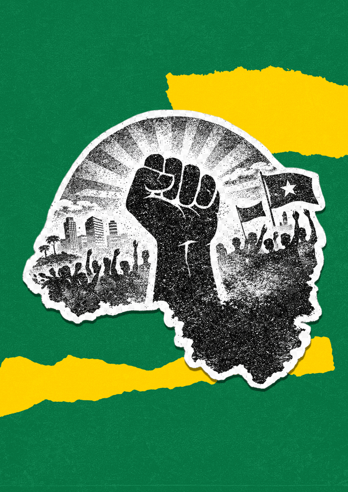
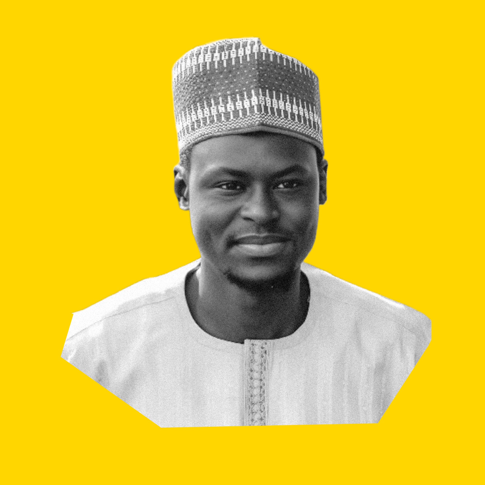
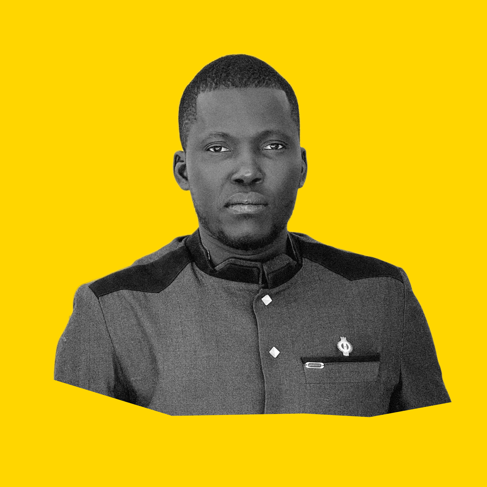

WestAfricaYoungParliamentariansNetwork
is uniting West Africa's next generation of leaders to shape
policy, governance, and the future of the region.
Objective
WAYPA advances youth-centered policy advocacy, meaningful
participation in decision-making, and cross-border collaboration
among young parliamentarians in West Africa. Through strategic
partnerships, structured mentorship, and leadership development,
it equips emerging leaders to influence governance, strengthen
institutions, and drive legislative impact.
At the same time, it promotes peacebuilding and social cohesion
by empowering young leaders to bridge divides and support
inclusive, stable societies across the region.
Our Vision
/01
Sub-Regional Scope
A coordinated network across ECOWAS member states, giving young
parliamentarians a regional platform for shared priorities,
peer learning, and collective advocacy.
/02
Legislative Power in Motion
Members are not only advocates. They are lawmakers and elected
officials who can draft, debate, sponsor, and pass policies
that affect young people directly.
/03
A Youth Voice That Travels
WAYPA turns national policy lessons into regional momentum, so
progress in one country can inform action across the sub-region
and continental forums.
Our Programs

The Next Leaders
WAYPA's premier leadership development and mentorship program.
Cohorts of aspiring leaders from across West Africa are matched
with senior mentors, given rigorous governance training, and
supported toward elected office or senior public service.
Youth Health & SRHR Campaign
A coordinated sub-regional campaign for sexual and reproductive
health rights, pandemic preparedness financing, and the
elimination of harmful traditional practices through law,
oversight, and community engagement.
Youth Democracy Watch
A parliamentary monitoring and accountability initiative where
WAYPA members track youth-related commitments, publish
transparency reports, and raise parliamentary questions that
hold governments to promised reforms.
The Essence of WAYPA
WAYPA was established in 2023 following the 6th Annual Youth
Education and Leadership Conference in Buchanan City, Liberia,
where young parliamentarians and emerging leaders from across
West Africa came together to address the persistent
underrepresentation of youth in governance.
West Africa is one of the youngest regions in the world, yet
young people remain severely underrepresented in the
parliaments, cabinets, and policy chambers that shape their
futures. WAYPA exists to close that representation gap with
organization, legislative coordination, and accountable public
leadership.
WAYPA operates through a representative governance structure:
a General Assembly, an Executive Committee, a Secretariat
hosted at the Centre for Youth Policy, and country chapters
across ECOWAS member states. These bodies coordinate
programs, partnerships, policy positions, and regional
engagement.
Young parliamentarians, civil society organizations,
academic institutions, development partners, donors, and
emerging political leaders can connect with the Secretariat
about membership, partnerships, research, programs, or support.
Leadership
Meet the parliamentarians and strategic leaders driving WAYPA's
mission forward across the ECOWAS region.

H.E. Abdoulie Njai
Chairperson - The Gambia
Hon. Mohammed T. Fofanah
Deputy Secretary for Policy and Planning
Hon. Promise Nwadigos
Deputy Secretary for International Relations and Global Affairs

Hon. Matarr Syla
Deputy Secretary for Sahel Affairs
Hon. Dr. Amadou Maiga
Mali
Hon. Oussoumane Camara
Guinea Bissau
Hon. Mac Ndalama
Malawi
Hon. Tagnonnanon Edmonde Fonton
Benin
Hon. L. Brinkman
Southern Africa Coordinator
Amb. Leo E. Tiah
Secretary General - Liberia
Updates & field notes.
Follow what WAYPA members are doing across the region — meetings, country visits, policy briefs, and the small wins that don't always make the news.
FeaturedMonrovia, Liberia
WAYPA delegation at the Republic of Liberia.
Members of the WAYPA Secretariat stand with national stakeholders during a working visit in Monrovia — coordinating priorities for the year ahead and reaffirming Liberia's role as a regional anchor for the network.
Strategic engagement with UNFPA on youth health and SRHR.
The Secretariat meets with UNFPA leadership to align WAYPA's regional SRHR campaign with UN partners — focused on adolescent health financing, harmful-practice elimination, and youth-led policy advocacy.
Working session with the Governance Commission of Liberia.
A formal engagement with the Governance Commission to anchor the Secretariat's policy work in Liberia's institutional governance frameworks and advance the network's accountability mandate.
Cross-border collaboration with international partners.
Members of the network meet with international counterparts to discuss policy harmonization, shared youth priorities, and how WAYPA can bring West African voices into wider continental and global forums.
The Gambia chapter convenes a working session on youth representation in the National Assembly — sharing notes with peers across the network and lining up the next round of legislative briefings.
Secretariat planning at the Centre for Youth Policy.
The Centre for Youth Policy, serving as WAYPA's secretariat and fiscal sponsor, hosts a planning session to coordinate operations across country chapters and align program delivery for the year.
Have questions about WAYPA? Interested in partnering, joining the
network, supporting programs, or engaging the Secretariat for media
or research? Reach out and the team will connect you to the right
country chapter or program lead.